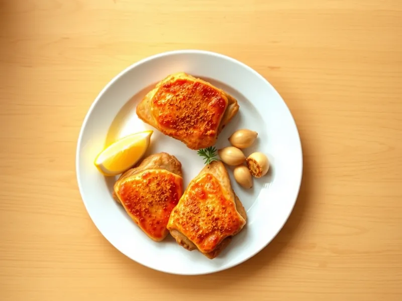

Фото: Иллюстрация ИИ, Cloudflare Workers AI
Куриные бёдра на сковороде с чесноком и паприкой
Бёдра без кости с хрустящей кожей, обжаренные с паприкой и чесноком
25 мин3 порц.476 ккал на порциюБ 43 · Ж 33 · У 3Интернациональная кухня
Продукты на 3 порц.
- Куриные бёдра6 шт
- Чеснок3 зуб.
- Паприка1 ч. л.
- Сушёные травы1 ч. л.
- Растительное масло2 ч. л.
- Соль1 ч. л.
- Перец чёрный молотый2 щеп.
- Лимон по желанию1 ст. л.
Как готовить
- Если бёдра с костью, срежьте мясо с кости ножом вдоль, кожу оставьте. Промокните салфеткой и натрите солью, перцем, паприкой и травами. Это 5 минут.
- Разогрейте масло на среднем огне, выложите бёдра кожей вниз и прижмите крышкой или тарелкой. Жарьте 8-10 минут, пока кожа не станет тёмно-золотистой и хрустящей.
- Переверните, добавьте раздавленный чеснок и жарьте ещё 6-7 минут без крышки.
- Проверьте готовность: проколите самое толстое место, сок должен быть прозрачным, без розового цвета.
- Сбрызните лимонным соком и дайте полежать 2 минуты перед подачей.
Совет. Не переворачивайте бёдра раньше времени: кожа сама отходит от сковороды, когда корочка готова. Если прилипает - подождите ещё минуту.